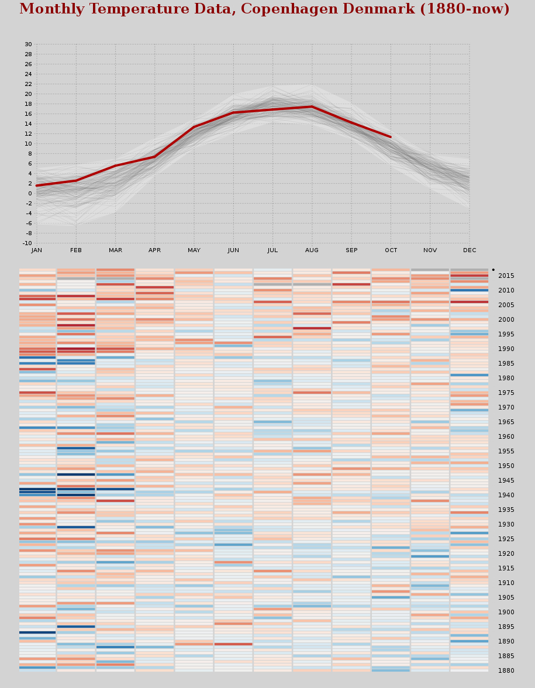

Project 2: Temperature Data
Our group is comprised of the following members:
| Name | Student No. |
|---|---|
| Andrew | qcm239 |
| Viktorija | hcl548 |
| Petur | xqw428 |
Visualization Overview
For this project, we created the two visualizations show below.
The first visualization is a standard line graph, which shows the monthly average temperatures. The first element of the visualization is a highlighted polygonal area, representing the mininmum and maximum average temperatures for each month. The next element is the collection of light grey lines. Each line represents a single year of data. The final element is a highlighted line (dark red), which allows a viewer to differentiate a single year of data from the other years. This element is changed by clicking on a row of cells in the second visualization.
The second visualization is a heat map, which shows the deviation from each months mean temperature. Each column is a month, specifically the month labeled directly above it. The color scale is a deviation scale from blue for minus deviation to red for positive deviation. Each row is clickable, so that a viewer can see the corresponding temperature data in the first visualization.
Motivation
The motivation for this project was to show how the weather (in terms of temperature) has changed over the past 100 years. Current research indicates that global warming has impacted weather patterns across the Earth, therefore, we would expect the data to show a warming trend in our heat map visualization.Method
For this assignment we used the historical temperature data for Copenhagen, Denmark available at http://data.giss.nasa.gov/gistemp/station_data/. From this dataset, we used the monthly average temperature data for each of the years provided, 1880 to 2017. There are a few missing data points, which are represented as 999.9, therefore we have checked for these missing values in our implementation logic.
We started by using the Python script mkCSV.py to convert the data to a .csv file that is easier for d3 to parse. After reading the data in our d3 javascript, we do some preprocessing of the data:
- the minimum and maximum temperature for each year
- the minimum and maximum temperature for each month across all years
- the mean temperature for each month for 1880 to 1979
- the deviation of each month's average temperature from the mean.
Results
After processing and visualizing the temperature data for Copenhagen, we can see that there is a general warming trend, especially if we look at the heat map visualization. Here we see that the deviation from the mean has become larger (i.e., warmer) when compared to the historical range (i.e., 1880 to 1979). This is especially true for the winter months (i.e., Dec-Mar).
Discussion
Conclusions
Individual Responses
Which data set (that is realistically possible for you to obtain) and visualization would you include to give a more confident answer to the articles main question? A mockup is welcome.
(???)
So far we've only taught static visualizations. Which dynamic elements or interactions could improve your article? A mockup is welcome.
(Andrew)
How big data sets are reasonable to load in d3 visualizations? What types of visualizations does a limit like that exclude? Give examples of visualizations that must be based on large data sets and discuss how they deal with this. Could you have reduced the size of the data sets in this assignment?
(???)